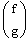

Partial Differential Equations in Solve Blocks |
Pdesolve(u, x, xrange, t, trange, [xpts], [tpts]) Returns a function or vector of functions u(x,t) that solve a 1-dimensional nonlinear PDE or system of PDEs, with n independent equality constraints for an nth order differential equation. Values are interpolated from a matrix of solution points calculated using the numerical method of lines.
Pdesolve must be used in a Solve Block.

Neither literal or array subscripts may be used when naming functions, to accommodate the subscript partial differential notation.The universal notes on constructing Solve Blocks apply. Within the body of the block: